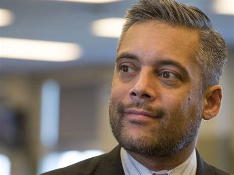

Caylan Ford Part 3
November 22nd, 2020
In Part 1, I gave you the backstory about Caylan Ford, and her unceremonious removal from the United Cuckservative Party.
In Part 2, I began to explain how Caylan was fighting back, and hinted at a lawsuit being served by her.
Here, I'm going to take a quick look at that lawsuit. Unfortunately, while Caylan Ford has a fairly active twitter profile, and her own website, she didn't really explain what's going on in her lawsuit. For this, I'm going to have to use the dreaded CTV.
CTV:
TDC_ARTICLE_START
CALGARY -- A former UCP candidate in the 2019 provincial election has filed a $7 million defamation lawsuit against the NDP, along with several individuals and media companies.
Caylan Ford was a United Conservative Party (UCP) candidate in the riding of Calgary-Mountain View before dropping out of the race days into the campaign after private messages she had previously made on social media on the issue of race were released.
The amended lawsuit, filed Nov. 12, names a number of people and companies as defendants, including:
TDC_ARTICLE_STOP
Alright, this is the good stuff. Pay attention.
TDC_ARTICLE_START
- Kiram A. Jivraj, an individual;
- The Broadbent Institute, which operates PressProgress;
- The New Democrats of Canada Association (NDP);
- Progress Alberta;
- Duncan Kinney, who published work on the Progress Alberta website;
- Avnish Nanda, an individual
- Luke LeBrun, whose work was published on PressProgress;
- Stephen Magusiak, whose work was published on PressProgress;
- Jeremy Nolais, who was chief of staff to then-premier Rachel Notley;
- Rakhi Pancholi, then the NDP MLA for Edmonton-Whitemud;
- David Khan, leader of the Alberta Liberal Party;
- Canadian Broadcasting Corporation (CBC);
- Toronto Star Newspapers, and;
- Emma McIntosh, whose work was published by the Toronto Star.
TDC_ARTICLE_STOP
Jason Kenney, Kiram Jivraj, Stephen Harper
A fuller investigation of these people should be done, although since Caylan, while attacked by our enemies, is unfortunately not our goyette, that work will not be done by yours truly. Similar to my article on the UBC Social Justice Institute "Black Organizations," which you can read here, my goal is not to take direct action against these myself, only inform you the reader. When one of us is attacked, we will then do the work.
TDC_ARTICLE_START
The suit claims Jivraj made untruthful allegations about Ford a number of times, including in a March 3, 2018 text message and an Oct. 1, 2018 letter.
It also claims statements published on Oct. 13, 2018 and Dec. 13, 2018 by PressProgress were defamatory.
Other allegedly defamatory statements were published on social media and in blog posts by individuals named in the suit.
The suit also claims stories published by CBC and the Toronto Star were false and defamatory.
Ford is seeking $5 million for defamation and $2 million in punitive damages along with $150,000 from PressProgress, CBC and Jivraj for "intrusion upon Ford's seclusion."
The suit is also seeking $500,000 from Jivraj for "intentional infliction of mental suffering."
None of the allegations have been proven in court and no statements of defence have been filed.
TDC_ARTICLE_STOP
I'm glad that I just wrote an article about Propaganda, because this is a clear and obvious example of how the Propaganda doesn't simply misinform the reader, but in fact does not inform the reader whatsoever. There are some questions that any reader must have after reading this article. Was Caylan defamed? Did Jivraj "make untruthful allegations about Ford"? If so, what were they? Was Caylan Ford defamed by PressProgress? If so, what were the defamatory statements?
The lawsuit itself, which is theoretically public, contains the information. CTV lacks the desire, and possibly even the competence, to go out and look for the actual factual claims being made in this lawsuit. Claims as in "they say I said x, but I did not say x," or "Clearly I was playing a devil's advocate argument, and this statement, y, is clearly and maliciously taken out of context." Those statements. The closest that I could find myself was something like this.
Taken from Press Progress's article on Caylan
I can only speculate, and I'm sure the unthinking NPC's who read CTV will do even less than this. I personally am not too interested in the specific details of the lawsuit. Not interested in calling up the Court Clerk's Office where the case was filed, and stumbling through that conversation. If more information becomes available, then I will happily share that with you. I will also share the outcome of this case.
The people named are more interesting. I was even considering doing a sort of who's who of the names listed in this suit, because they are all awful. Starting with the Broadbent Institute. According to their own website, they are:
TDC_ARTICLE_START
Canada's leading progressive, independent organization championing change through the promotion of democracy, equality, and sustainability and the training of a new generation of leaders.
TDC_ARTICLE_STOP
A casual glance at Wikipedia finds this organization to have been founded by Ed Broadbent, the former leader of the NDP from 1975 to 1989. Broadbent Institute is the owner of Press Progress. So, before we even get into any particular details of this case, Jason Kenney of the Donor-Right, explicitly caved to a hit piece written by an organization created and funded by his "enemies."
Only, they aren't really his enemies, goy. You are his enemies. Or rather, you are his donors enemies, and he is their faithful servant.

I'm amazed at how much I hate this guy.
As far as the actual Broadbent Institute goes, it's almost like a Donor-Left organization stuck in the 80's. In fact I find it outright quaint. On their website, you'll find many policies that I almost agree with, and would argue are a step in the correct direction. Many perhaps was an overstatement, but here's their "Wealth Tax," policy:
TDC_ARTICLE_START
Indeed, 75% of respondents favoured a tax of 1-2% on large fortunes, (44% strongly support and 31% support) including 69% of even Conservative voters. Today, only a handful of advanced economies levy an annual tax on wealth. Though inheritance taxes are still quite commonly levied on large fortunes being passed from one generation to another, the tax “burden” in most advanced economies has shifted from taxation of capital and the affluent to taxes on labour and ordinary working families over the past three decades or so.
TDC_ARTICLE_STOP
Indeed. It can be easy for us to forget that the Donor-Left exists to lose on this issue, just like the Donor-Right exists to lose on Racial/Social/Cultural issues. I take absolutely no issue with the above statement, other than that it simply does not go nearly far enough. The real purpose of this is to channel the violent hatred that normal everyday have for Jeff Bezos, into "support the NDP," ensuring that their rage goes absolutely nowhere.
If you don't believe me, take a look at this statement from their page on Income Inequality:
TDC_ARTICLE_START
Concerns about cost of living, wages, and affordability have been an important part of Canada’s political discourse for many years. But we felt something was happening. Canadians seem to be more anxious about the future and their ability to maintain a standard of living they expect.
We also felt that many populist movements, both in Canada and abroad, have effectively tapped into this anxiousness and leveraged it for political gain often with a regressive, anti-immigration and anti-government tone.
Our objective is to offer progressives in Canada insight into the broader issue and how to offer a progressive solution to the growing affordability crisis.
TDC_ARTICLE_STOP
 So the goal is pretty transparent here. Turn the hatred that normal people feel towards billionaires into harmless voting for the NDP. And make no mistake, the NDP is an absolute corporate whore of a party. We can see this provincially in BC, where the NDP has done absolutely nothing for working class people ever, despite currently being in power. It's just yet another Donor-Left party.
And BTW, I would say that there are four reasons why we have a massive decline in living standards amongst young people. Migrants driving wages down, outsourcing. corporate consolidation (such as Amazon destroying small businesses), and an education system that does not teach young people anything of practical value. Those are the reasons, everything else is bullshit.
It's actually sort of interesting how the Donor-Right attacks on the NDP as being "Socialist," affirm the central lie that these people aren't just Corporate Whores to the nth degree. It's the reverse of the Donor-Left "these CuckServatives are RACISTS who love White People." An attack meant to legitimize the Donor-Right as their saviours against Anti-Whites and Sexual Fetishists.
So the goal is pretty transparent here. Turn the hatred that normal people feel towards billionaires into harmless voting for the NDP. And make no mistake, the NDP is an absolute corporate whore of a party. We can see this provincially in BC, where the NDP has done absolutely nothing for working class people ever, despite currently being in power. It's just yet another Donor-Left party.
And BTW, I would say that there are four reasons why we have a massive decline in living standards amongst young people. Migrants driving wages down, outsourcing. corporate consolidation (such as Amazon destroying small businesses), and an education system that does not teach young people anything of practical value. Those are the reasons, everything else is bullshit.
It's actually sort of interesting how the Donor-Right attacks on the NDP as being "Socialist," affirm the central lie that these people aren't just Corporate Whores to the nth degree. It's the reverse of the Donor-Left "these CuckServatives are RACISTS who love White People." An attack meant to legitimize the Donor-Right as their saviours against Anti-Whites and Sexual Fetishists.
 Their website is also not particularly well updated, so moving forward.
Progress Alberta, well let me just share this screenshot. I think it sums them up completely.
Their website is also not particularly well updated, so moving forward.
Progress Alberta, well let me just share this screenshot. I think it sums them up completely.
Partisan attacks on Donor-Right, Anti-Whitism, Fake Econ Populism...
Their last update was more than a year ago, so this seems like a really low energy, dead Globo Homo Schlomo outfit. However, this Duncan Kinney guy. Well, I really don't think I can describe this better than his self-given description.
If you can't make out the text, let me quote that for you.
TDC_ARTICLE_START
Duncan Kinney has lived and worked in amiskwaciwâskahikan (Edmonton, Alberta) for the past nine years, was raised and went to school in Calgary, was in utero in Drayton Valley during the Lodgepole Blowout and his family's Earthship is in Lethbridge County in southern Alberta.
Before Progress Alberta, Duncan worked in non-profit communications and in journalism. Duncan is a committed community volunteer and organizer, a dad to an amazing daughter and an enthusiastic walker of Bruce.
You can check out the rest of Duncan's professional and educational background here.
TDC_ARTICLE_STOP
TRULY A MAN OF THE PEOPLE, IF EVER THERE WAS ONE! Yes, this is the man who will take on Billionaires and bring the axe to the parasites in our bureaucracy. This is the man who will raise the wages of regular everyday people, and bring back hope to the future for others. This is the man who will destroy the usurers who have crippled us under Student Load Debt, and put their heads on sticks. This is it. This man. Him. A bugcreature with a soybeard who talks like a fucking weirdo and would get beaten to death by working class people if they knew the cops weren't watching.

And he works at an NGO
Next up we have Avnish Nanda. CTV of course doesn't explain who he is, nor why he's listed in this lawsuit. Caylan Ford doesn't do much better. What we know is that he is "a litigator who practices law in Alberta and British Columbia," at least according to his website. In case you don't get the wrong idea, let me quote him for you:
TDC_ARTICLE_START
Avnish was drawn to the law out of his interest and involvement in social justice activism, which he has continued through his legal practice. Avnish frequently acts for parties advancing civil liberties, human rights, and Indigenous self-determination. Outside of the law, Avnish serves on a number of non-profit and community boards, and works on a range of social justice and public interest causes.
TDC_ARTICLE_STOP
Avnish Nanda
I'm going to blitz through the next few. Luke Lebrun is a partisan hack for Press Progress.

Luke Lebrun
Stephen Magusiak is more of the same, although he appears to be both more successful, and more of a bug creature. Sort of like the Canadian Michael Hayden, or whatever that loser that was interviewing Mike Enoch was named.
Stephen Magusiak
And yes, his twitter profile pic is him and his cat, presumably watching TV.
 Then we have Jeremy Nolais, Chief of Staff to Alberta NDP Leader Rachel Notley.
Then we have Jeremy Nolais, Chief of Staff to Alberta NDP Leader Rachel Notley.
Jeremy Nolais. A true chad.
Rakhi Pancholi, an NDP MLA from South Edmonton.
What kind of name is Pancholi?
The leader of the Liberal Party of Alberta, David Khan. Except that as of yesterday, November 22nd, 2020, he has actually stepped down and into a "new opportunity in law." Ah, lawyers, such good people.
David Khan, former Alberta Liberal Party Leader
And finally we have Emma McIntosh, a typical obedient mouthpiece who works for a few differnet organizations, such as the Toronto Star, and National Observer.
Emma McIntosh
Quoting from her bio, found here:
TDC_ARTICLE_START
"We're seeing the effects of disinformation, on issues like the anti-vaccination campaigns to and the worsening of Islamophobia," she said. "If we don't want to see more of these impacts coming into our reality we have to start reporting on this like it was any other beat and aggressively go after disinformation when we see it."
TDC_ARTICLE_STOP

WMD in Iraq == not disinformation.
Well that about sums it up. These are the people that Caylan Ford is suing, along with the Toronto Star and CBC. We can only speculate how well this will go, but I suspect quite well.

So the goal is pretty transparent here. Turn the hatred that normal people feel towards billionaires into harmless voting for the NDP. And make no mistake, the NDP is an absolute corporate whore of a party. We can see this provincially in BC, where the NDP has done absolutely nothing for working class people ever, despite currently being in power. It's just yet another Donor-Left party.
And BTW, I would say that there are four reasons why we have a massive decline in living standards amongst young people. Migrants driving wages down, outsourcing. corporate consolidation (such as Amazon destroying small businesses), and an education system that does not teach young people anything of practical value. Those are the reasons, everything else is bullshit.
It's actually sort of interesting how the Donor-Right attacks on the NDP as being "Socialist," affirm the central lie that these people aren't just Corporate Whores to the nth degree. It's the reverse of the Donor-Left "these CuckServatives are RACISTS who love White People." An attack meant to legitimize the Donor-Right as their saviours against Anti-Whites and Sexual Fetishists.
Their website is also not particularly well updated, so moving forward.
Progress Alberta, well let me just share this screenshot. I think it sums them up completely.
Then we have Jeremy Nolais, Chief of Staff to Alberta NDP Leader Rachel Notley.